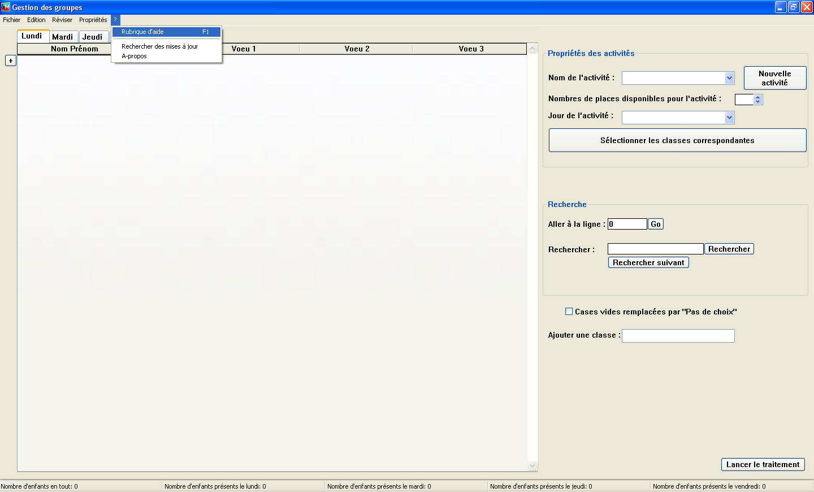
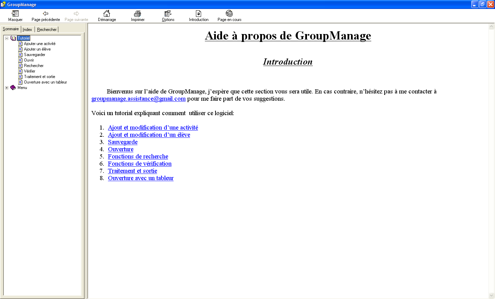

Comment commencer ?
Installation
Une fois le logiciel téléchargé, lancez l'executable. Lisez puis acceptez le contrat de licence, et dans la page suivante veuillez lire le premier point (le deuxième étant la traduction non-officielle de la licence).
La troisième page permet de sélectionner le dossier de destination, c'est à dire le dossier dans lequel GroupManage sera installé.
La quatrième page vous demande de sélectionner les composants à installer. Vous pouvez choisir d'installer le logiciel seul, où d'installer aussi le gestionnaire de ses mises à jours. Je conseille de tout installer, afin de profiter plus facilement des nouvelles fonctionnalitées qui peuvent être ajoutées.
La cinquième page est la page de sélection du dossier du menu Démarrer depuis lequelle le logiciel sera accéssible. Vous pourrez accéder au logiciel après l'installation en allant dans Démarrer, Tous les programmes.
La sixième page propose les tâches supplémentaires à effectuer. Vous pouvez ainsi décider de créer une icône sur le bureau, et choisir la fréquence des mises à jour. Je conseil pour cela de cocher "Au lancement de GroupManage" et de laisser décoché "Installer la mises à jour automatiquement".
Enfin, cliquez sur Installer.
Utilisation
Une fois le logiciel installé, lancez le. Appuyez sur la touche F1 ou cliquez sur le point d'interrogation dans la barre de menu puis sur "Rubrique d'aide" pour afficher l'aide.
Dans le sommaire, accédez à la rubrique "Tutoriel" puis suivez le.
En fin de traitement, il est très probable que tous les enfants ne soient pas attribués
Bonne utilisation !